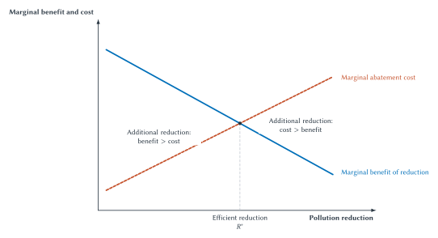

Two Plants, One Airshed
A city sits downwind from two manufacturing plants. Both plants release the same harmful substance into the air. Residents bear health risks, cleaning costs, and lost enjoyment of their homes. The plants pay for labor, fuel, equipment, and raw materials, but they do not automatically pay residents for every additional unit of pollution.
City officials agree that the emissions should be reduced. Agreement ends there.
One proposal requires both plants to install the same control technology. A second proposal limits emissions but lets each plant choose how to meet the limit. A third charges a fee for each unit emitted. A fourth caps total emissions and lets the plants trade permits. Residents propose allowing lawsuits for pollution damage. An industry group recommends voluntary certification. A neighborhood organization wants both plants closed.
The two plants are not identical. Plant A can eliminate its first units of pollution cheaply by adjusting its production process. Plant B uses older equipment and faces much higher control costs. The agency knows that the plants differ, but it does not initially know their costs. Each plant knows more about its own equipment, but each also has a reason to describe control as unusually expensive.
The dispute presents three questions that must not be collapsed into one.
First, why intervene? Pollution costs are missing from the plants’ private calculations. That supplies a possible efficiency rationale for law.
Second, how much reduction is worthwhile? Cleaner air is valuable, but pollution control uses labor, capital, energy, and other resources. The efficient objective is not automatically zero emissions. It is to continue reducing pollution while the benefit of another reduction exceeds its cost.
Third, which institution and instrument should act? A technology rule, performance standard, tax, permit market, lawsuit, insurance requirement, or private standard uses different information and creates different incentives. Even a well-designed rule can be altered by enforcement limits, political organization, administrative delay, or legal constraints on who may decide.
These are the central problems of regulation. Public choice adds another question: how will voters, officials, agencies, firms, workers, consumers, and organized groups behave inside the regulatory process? The answer cannot begin by assuming that markets are perfect. It also cannot end by assuming that public officials possess perfect information and pursue only the public interest.
Law and economics compares imperfect institutions.
Why Regulate?
Chapter 2 introduced a competitive-market baseline. When decisionmakers bear the costs and receive the benefits of their actions, prices help coordinate decentralized choices. A buyer deciding whether another unit is worth its price and a seller deciding whether another unit covers its cost can move resources toward higher-valued uses.
The baseline can fail when important effects do not enter those calculations. Pollution is the most familiar example. If a plant does not bear the harm imposed downwind, its private cost is below the social cost of production. It may produce too much output, choose an unnecessarily dirty process, or take too little precaution.
This is an externality. The conventional Pigouvian response is to make the decisionmaker account for the external cost. A tax, liability rule, emissions limit, or another institution may bring private incentives closer to social cost.
Coase supplied the essential caution. Harm is reciprocal in the economic sense. Preventing emissions may protect residents while reducing production, employment, or other valuable activity. Calling the conflict reciprocal does not deny physical causation or legal responsibility. It means that every feasible response has costs and that the relevant comparison is among alternatives.
Externalities are only one rationale for regulation.
Public Goods and Collective Action
A public good is difficult to exclude people from using, and one person’s use may not substantially reduce what remains for others. National defense is the standard example. Disease surveillance, some forms of basic research, and information about common hazards can share aspects of the problem.
Voluntary contributions may be too small because each person can hope that others will pay. The resulting free-rider problem can justify taxation, public provision, compulsory participation, or another collective arrangement. Yet identifying a public good does not determine the correct scale, provider, or funding mechanism.
Information and Quality
Consumers often cannot observe product quality, professional competence, financial risk, or environmental danger before making a choice. Sellers may know more. If buyers cannot distinguish high quality from low quality, they may refuse to pay enough to support high-quality supply. Reliable goods and services can then leave the market or never enter it.
Disclosure rules, testing, licensing, certification, warranties, reputation systems, and liability can respond to this information problem. A credible quality floor may make exchange possible between strangers. But each response differs. Disclosure preserves choice but may be ignored or misunderstood. Licensing screens before entry but may exclude capable providers. Liability acts after harm and depends on proof and collection. Private certification can adapt quickly but may have conflicts of interest.
Coordination and Compatibility
Some valuable activities require people to use compatible rules or standards. Traffic signals, electrical specifications, building conventions, payment systems, and communication protocols coordinate behavior. A common rule can lower the cost of exchange even when no participant has caused a conventional external harm.
Standards can emerge through markets, professional organizations, insurers, platforms, or government. A public standard can make compatibility credible and widely available. It can also freeze an inferior design or make entry depend on persuading a centralized authority.
Natural Monopoly
An industry may have large fixed costs and low costs of serving an additional customer. Building several overlapping water pipes or electricity distribution networks can be wasteful. One network may serve the market at lower total cost than several.
This is a possible natural monopoly. It creates a genuine problem: competition inside the market may duplicate infrastructure, while one provider may possess durable power over price, quality, access, and investment. Public ownership, rate regulation, franchise bidding, cooperative ownership, and contractual governance are possible responses. Economies of scale identify the problem; they do not choose the institution.
Efficiency, Distribution, and Paternalism
Not every regulation is justified as a correction of market failure. Law may pursue distributional goals, protect rights, express public values, or prevent people from taking risks to themselves. These objectives can be important, but they should be stated rather than smuggled into an efficiency argument.
A wage rule may be defended as redistribution. A drug restriction may be defended as paternalism. A nondiscrimination rule may rest on equal citizenship as well as economic effects. Economic analysis can clarify behavioral responses, incidence, enforcement costs, and tradeoffs. It cannot convert every legal objective into the correction of an externality.
The distinction is the first discipline of regulatory analysis. Diagnose the problem before choosing the cure.
Which Instrument?
A regulatory instrument is the mechanism used to change behavior. Instruments that address the same problem can place decisions in different hands, demand different information, and generate different errors.
Return to the two plants.
Technology Mandates and Performance Standards
A technology mandate specifies what a regulated party must use or do. The agency might require a named type of filter or scrubber. Compliance may be relatively easy to observe: either the equipment is installed or it is not.
The cost is rigidity. Plant A may have a cheap process change that eliminates more pollution than the required equipment. Plant B may face a different engineering constraint. A mandate can suppress those alternatives and weaken the incentive to invent a better method after the rule is written.
A performance standard specifies an outcome instead. Each plant may emit no more than a stated amount, while choosing its own technology. This preserves flexibility, but it requires measurement. If emissions are difficult to monitor, the apparent freedom may become an invitation to manipulate tests, move pollution across time, or optimize only what the rule records.
The choice is not simply command versus freedom. A technology mandate economizes on outcome measurement when an effective method is known. A performance standard economizes on the regulator’s need to know each firm’s production process. Each uses different information.
Corrective Taxes and Tradable Permits
A corrective tax places a price on the harmful activity. If the emissions charge is $300 per unit, a plant will reduce a unit whenever doing so costs less than $300. The firm uses its private knowledge of control costs, while the regulator sets the price and measures the taxable activity.
The tax does not tell officials how much pollution will remain. If control is cheaper than expected, plants reduce more. If it is expensive, they pay more and reduce less. The regulator still needs information about harm to set the tax and must update it as conditions change.
A tradable-permit system begins with a total quantity. Government creates permits corresponding to the allowed emissions. A plant can reduce its own pollution or acquire a permit from another source. Trading directs reductions toward firms with lower control costs, provided emissions are measurable and the permits are transferable in a functioning market.
Permits do not make the government disappear. Public authority defines the cap, the covered sources, the permit, the monitoring system, the initial allocation, and the penalty for noncompliance. Location can also matter. A trade that preserves total emissions may create a local pollution concentration if damages differ across places.
Chapter 4’s spectrum example illustrates the broader point. Coase proposed auctioning legally defined spectrum licenses rather than relying only on administrative assignment. The auction used a price mechanism to help allocate scarce permissions, but public institutions still had to define frequency, power, geography, duration, transfer, and interference rules. A market-based instrument depends on legal architecture.
Disclosure, Licensing, and Liability
A disclosure rule requires information rather than a particular choice. Labels, warnings, financial reports, pollution inventories, and standardized risk measures can help consumers, investors, workers, insurers, or voters respond. Disclosure works best when the information is meaningful, comparable, credible, and connected to a decision people can actually change.
A licensing rule requires permission before a person or firm may enter or continue an activity. Licensing can screen competence before a patient, client, or customer suffers harm. It can also reduce supply, limit mobility, and protect incumbents. The central questions are what competence is difficult to observe, whether the screen predicts it, and whether less restrictive alternatives can supply credible information.
Tort liability ordinarily acts after harm. A plaintiff brings a claim, evidence is developed in a concrete dispute, and damages may make the injurer bear costs it would otherwise externalize. Liability uses decentralized enforcement and case-specific facts. Its limitations include delay, litigation expense, causation problems, insolvency, inconsistent outcomes, and the inability to prevent irreversible harm before it occurs.
Private institutions remain part of the menu. Insurers inspect risks and set coverage conditions. Certification organizations test products or professionals. Contracts allocate duties. Reputation systems aggregate experience. These arrangements may use specialized or repeated information, but they can suffer weak competition, conflicts of interest, incomplete coverage, and limited authority over third-party harm.
Building safety shows why the comparison is often between portfolios rather than isolated tools. A public building code can establish a widely enforceable minimum. Private inspectors and certification bodies can apply specialized knowledge. Insurers can price recurring risks and require precautions as a condition of coverage. Contractor reputation and tort liability add further discipline. The useful question is which institution should perform each task, not whether safety must be exclusively public or private.
The comparison can be summarized without pretending that one column identifies a winner.
| Instrument | What it directly controls | Characteristic advantage | Characteristic information or implementation risk |
|---|---|---|---|
| Technology mandate | Required method or equipment | Easy to observe when the method is known | Ignores cheaper methods and can slow innovation |
| Performance standard | Emissions or another measured outcome | Leaves firms flexibility over methods | Requires measurement and an administrable target |
| Corrective tax | Price imposed per unit of harmful activity | Uses firms’ private abatement-cost information | Regulator must set and update the price |
| Tradable permits | Total permitted quantity | Holds the cap while reallocating reductions | Requires monitoring, allocation, and a functioning permit market |
| Disclosure or labeling | Information supplied to decisionmakers | Preserves choice when information can change behavior | Information may be misunderstood, ignored, or strategically framed |
| Licensing | Permission to enter or continue an activity | Can screen minimum competence before harm | Can restrict entry and protect incumbents |
| Tort liability | Responsibility after harm | Uses case-specific evidence and decentralized enforcement | Delay, causation, litigation cost, and inconsistent outcomes |
| Private certification or insurance | Eligibility, price, or coverage conditions | Uses repeated market and claims information | Conflicts of interest, weak competition, and incomplete coverage |
The correct instrument depends on the margin. If the harm comes from emissions, regulating the installation of a visible machine may be an imperfect proxy. If quality cannot be observed before irreversible injury, disclosure alone may be weak. If a harm is rare, case-specific, and readily traceable, liability may outperform a large permanent agency. Instrument design begins with what must change and who can observe it.
How Much Protection?
Political debate often treats protection as a contest between more and less. Economic analysis asks a more precise question: what happens at the next margin?
Suppose the first pollution reductions are inexpensive and prevent serious harm. Those reductions have high net benefits. As the city becomes cleaner, additional reductions may prevent smaller harms or require increasingly costly controls. The city should continue while the marginal benefit of another unit of reduction exceeds its marginal abatement cost.
In notation,
marks the efficient benchmark. Read the expression in words.

Figure 13.1. Marginal benefit and marginal abatement cost. Additional pollution reduction is worthwhile while its marginal benefit exceeds its marginal abatement cost. The efficient reduction occurs where the two are equal. The schematic benchmark does not imply zero pollution or determine which regulatory instrument will achieve the reduction at least cost.
To the left of
Zero pollution can be efficient when even a small remaining amount causes catastrophic harm or when elimination is cheap. Positive pollution can be efficient when the final reductions are extremely costly relative to the harm they prevent. The conclusion comes from the comparison, not from a presumption for or against regulation.
The same logic applies beyond pollution. Another inspection, safety device, disclosure field, licensing hour, or product test is justified by the additional harm it prevents relative to its additional social cost. Administrative cost belongs in that calculation. So do delay, reduced output, foregone innovation, and predictable error.
Risk-Risk and Error Tradeoffs
A regulation can reduce one risk while increasing another. A product restriction may remove a hazard while delaying a valuable substitute. An extremely costly safety requirement may raise prices enough to change consumption, employment, or investment. A rule aimed at preventing false claims may suppress accurate but uncertain information.
This does not mean every regulation causes offsetting harm large enough to defeat it. It means that the comparison must include responses. People and firms adjust to legal rules.
Regulators also face false positives and false negatives. A false negative allows a harmful product or activity to continue. A false positive blocks a safe or valuable one. A stricter screen usually changes both. The preferred balance depends on the magnitude and reversibility of each error, available correction procedures, and who bears the loss.
Ex ante protection can be especially valuable when harm is catastrophic or irreversible. Ex post correction becomes more attractive when risks are heterogeneous, learning is rapid, and erroneous prohibition is difficult to reverse. Many systems combine a minimum ex ante floor with liability, monitoring, and later revision.
The Same Target at Different Cost
Figure 13.1 asks how much total pollution reduction is worthwhile. A separate question asks where that reduction should occur.
Assume each ton of reduction creates $300 of marginal benefit over the relevant range. The plants face these invented costs:
| Reduction | Plant A’s marginal cost | Plant B’s marginal cost |
|---|---|---|
| First ton | $100 | $500 |
| Second ton | $200 | $600 |
Plant A should remove two tons. The first costs $100 and the second $200, each below the $300 benefit. Plant B should remove none because even its first ton costs $500.
The efficient two-ton reduction costs $300 in total. Now impose a uniform command requiring each plant to remove one ton. Total reduction remains two tons, but the cost becomes $100 at Plant A plus $500 at Plant B, or $600.
The command reaches the same environmental target at twice the cost. The problem is not that officials selected too much or too little total reduction. The problem is that the rule ignored heterogeneous marginal abatement costs.
A $300 emissions charge gives Plant A a reason to make both reductions and Plant B a reason to pay rather than undertake a $500 reduction. A permit market can produce a similar reallocation if Plant A can reduce and sell a permit more cheaply than Plant B can reduce. Both approaches use private cost information.
The example is deliberately simple. Real emissions can differ by location, timing, toxicity, affected population, and interaction with existing pollution. One plant’s reduction may not be an adequate substitute for another’s. Monitoring and trading cost money. The lesson is conditional: when reductions are genuinely substitutable and costs differ, equalizing marginal abatement costs can achieve a target more cheaply than uniform source-level commands.
Who Ultimately Pays?
A statute may say that firms must comply. Economic incidence asks who ultimately bears the cost.
A plant may raise product prices, reduce wages, renegotiate supplier terms, lower dividends, delay investment, or lose asset value. Which adjustment dominates depends on demand and supply responsiveness, market structure, time, and the regulatory instrument. Legal incidence and economic incidence need not match.
This matters for both efficiency and distribution. A rule advertised as a charge on a large corporation may be borne partly by consumers or workers. A subsidy advertised as assistance to buyers may be captured partly in seller prices. These possibilities are not reasons to ignore distribution. They are reasons to trace it.
Fixed Costs, Entry, and Scale
Compliance costs can be fixed or variable. A $1 million testing system costs $1 million whether a firm sells ten thousand units or ten million. The cost per unit is therefore much higher for a small entrant.
Uniform rules can have unequal competitive effects even when every firm faces the same words. An incumbent may already own a compliance staff, laboratory, data system, or distribution network. A new firm must build them before its first sale. The rule can improve safety while also raising the scale required to enter.
That result does not prove capture. The fixed cost may be necessary to produce a credible quality floor. But it belongs in the analysis, especially when less restrictive testing, insurance, staged entry, mutual recognition, or third-party certification could achieve similar protection.
Regulatory Lag
Rules are written using current information. Technology, costs, and risks change.
A mandate for the best available filter in one decade can become a barrier to a cleaner process in the next. A disclosure designed for paper forms may fit automated transactions poorly. A license tied to an old occupational method may exclude a new service model that produces the same outcome differently.
Review clauses, pilot programs, waivers, experimental zones, and sunset provisions can preserve learning. They also create uncertainty. A firm may hesitate to make a long-lived investment if the rule can change abruptly. Regulatory design therefore balances stability against revision rather than treating either as free.
Information Before Incentives
It is tempting to explain every regulatory failure through capture or bad motives. That is too quick.
Imagine an agency staffed entirely by competent officials committed to the public interest. They still must estimate harms, compare technologies, anticipate responses, select measurements, and update rules. Much of the relevant knowledge is local, private, changing, or not yet produced.
Plant engineers know details about machinery that agency officials do not. Residents know local exposure and behavior that firms do not. Insurers observe claims across firms. Scientists understand mechanisms but may disagree about uncertain magnitudes. Consumers possess information about their own preferences. No participant holds the complete picture.
Hayek emphasized that social knowledge exists in dispersed and sometimes contradictory pieces rather than as data already assembled for one decisionmaker. The regulatory question is therefore not simply whether officials are intelligent. It is how an institution generates, reveals, tests, and updates information.
Prices can reveal scarcity and willingness to pay without requiring a central planner to know every production plan. Liability can induce parties with a large stake and case-specific evidence to bring disputes forward. Agencies can assemble scientific expertise, compel disclosure, standardize measurements, and compare risks across many cases. Courts can test opposing claims through procedure. Insurers can pool loss information. Professional organizations can use specialized knowledge.
Each information system is incomplete. Prices omit external costs when rights and liability do not transmit them. Lawsuits may be too expensive or arrive after irreversible harm. Agencies may rely on the firms they oversee for technical data. Courts may lack expertise and see only selected disputes. Private certifiers may depend financially on those they certify.
The right comparison is institutional. Who possesses the information? What incentive exists to reveal it accurately? Can claims be challenged? How quickly does feedback arrive? Who can revise an error?
Information limits exist before public choice enters. Public choice asks what happens once the people and organizations inside the process have interests of their own.
Public Choice: Incentives Enter the Agency
Economics does not assume that business owners are self-interested and public officials are disembodied guardians of welfare. Nor does it assume that every official is corrupt. It asks how ordinary motives operate inside different rules.
Officials may care about public service, professional reputation, ideology, reelection, career advancement, budgets, jurisdiction, or avoiding visible blame. Firms may seek efficient rules, favorable transfers, entry barriers, or delay. Advocacy groups may supply neglected information while emphasizing the harms central to their missions. Voters may remain rationally uninformed when one person’s probability of changing a large policy is tiny.
These motives affect the information process. A plant has reason to investigate abatement methods when lower costs save money under an emissions tax. It may have less reason to discover a cheap method when discovery will cause an agency to impose a stricter command. A regulated industry may be the agency’s best source of technical information and also have reason to frame that information strategically.
The information story and the incentive story are distinct, but they interact.
Concentrated Benefits and Dispersed Costs
Suppose an entry restriction gives 100 incumbent firms an expected benefit of $500,000 each. The total benefit is $50 million. Suppose it imposes an expected cost of $6 on each of 10 million consumers. The total consumer cost is $60 million.
In the simplified accounting, the policy loses $10 million. Yet each firm has a $500,000 stake in organizing, learning the details, hiring counsel, submitting comments, and contacting officials. Each consumer has only a $6 stake. A consumer who spends an hour studying the rule may incur more cost than the expected personal loss.
The policy can therefore attract intense organized support and weak individual opposition even though the dispersed group loses more in total.
Mancur Olson’s collective-action analysis explains the asymmetry. Large groups face free riding: each member can hope others will bear the cost of organization. Small groups with large individual stakes may monitor members, coordinate action, and offer selective benefits more easily.
Concentration is not destiny. Consumers can organize through associations, media, political entrepreneurs, class actions, or repeated institutions. Some industries are fragmented. Moral commitment can motivate action beyond financial stakes. Transparency can lower information costs. The mechanism predicts pressure, not an automatic result.
Stigler, Peltzman, and Becker
George Stigler treated regulation as a valuable good supplied through politics. The state can restrict entry, support prices, direct subsidies, impose standards, or create advantages unavailable through ordinary market exchange. Organized groups therefore have reason to demand regulation, not merely resist it.
This does not require a cash bribe. A licensing rule can be publicly defended as quality protection while also limiting competitors. An environmental standard can reduce harm while favoring a technology produced by an organized supplier. Motives and effects can be mixed.
Sam Peltzman complicated a simple industry-capture account. Political decisionmakers may balance support from producers, consumers, workers, and other groups. A regulator who pushes prices or burdens too far can provoke opposition. Regulation may reflect a political equilibrium among competing constituencies rather than the maximization of one industry’s profit.
Gary Becker emphasized competition among pressure groups. Organization, political productivity, and the deadweight cost of transfers affect which demands succeed. A highly wasteful privilege can create stronger counterpressure than a small transfer. Public choice therefore does not imply that firms always win or that political competition never constrains them.
The three perspectives form a progression. Stigler tells students to look for political demand for regulation. Peltzman adds balancing among constituencies. Becker adds competition among organized groups. None guarantees an efficient outcome, but none supports the claim that every rule is a one-directional gift to industry.
Rent Seeking
A transfer is not itself necessarily a net social loss. If government takes $1 million from one group and gives it to another, one group loses what the other receives. Distribution changes.
The process of obtaining the transfer can consume real resources. Firms hire lobbyists, design strategic applications, litigate, delay rivals, and seek favorable classifications. Opponents spend resources resisting. Officials administer the contest. Gordon Tullock’s rent-seeking insight is that the opportunity to obtain a valuable privilege induces costly competition for it.
An entry restriction can create two losses. First, reduced competition may raise price, reduce output, or suppress innovation. Second, firms may spend resources acquiring and defending the restriction. The prospect of monopoly profit changes behavior before the privilege is awarded.
Rent-seeking analysis should also remain disciplined. Advocacy can produce useful information. Litigation can improve rule accuracy. Participation can expose hidden costs. Expenditures are wasteful only to the extent that they are directed toward obtaining transfers or privileges rather than producing socially useful information, accountability, or better decisions.
What Counts as Capture?
Regulatory capture occurs when regulation is persistently shaped toward the interests of a regulated group rather than the public purposes offered for the regulation.
The word is often used too casually. An agency consultation with industry is not by itself capture. Technical dependence is not proof of capture. A decision that benefits a firm is not enough. The firm may possess indispensable information, and the decision may also advance the statutory objective.
A serious diagnosis asks what mechanism redirected the agency and what evidence distinguishes that account from expertise, legal constraint, public disagreement, or ordinary error. Relevant evidence might include repeated one-sided access, suppression of contrary information, rules that systematically protect incumbents without serving the stated purpose, or a decision process structured to exclude affected outsiders.
Public choice is strongest when it identifies mechanisms. Used merely as a label for disliked policy, it explains very little.
Occupational Licensing: Protection and Entry
Occupational licensing brings the information and political stories together.
A patient cannot easily evaluate a surgeon’s training before treatment. A homeowner may have difficulty judging whether electrical work creates a hidden fire risk. A client may not know whether a professional has mastered a body of technical knowledge. Minimum education, testing, ethical duties, and discipline can create a credible quality floor.
The value of that floor depends on the occupation and the design of the rule. Licensing can improve information and induce investment in competence. It can also exclude capable providers, reduce mobility across jurisdictions, limit service variety, and raise prices. Incumbents may favor requirements that they already satisfy but new entrants must pay to acquire.
The economic analysis should proceed in steps.
First, identify the quality problem. What harm is difficult for customers to observe before purchase? How serious and reversible is it?
Second, identify the screen. Does the required training, examination, or experience predict the relevant competence? A requirement can be demanding without measuring what matters.
Third, identify the entry effect. Which providers, service models, and customers are excluded? A broad license may prevent lower-cost providers from supplying limited tasks they can perform safely.
Fourth, compare alternatives. Certification informs customers while preserving entry. Bonding and insurance provide financial assurance. Inspections target observable outputs. Scope-of-practice rules can reserve dangerous tasks while allowing simpler services. Reputation and warranties may work where consumers make repeated choices and harm is reversible.
Fifth, examine the political process. Who writes the exam, controls the board, supplies evidence, and benefits from the boundary? Industry participation can improve technical quality while also creating opportunities to protect incumbents.
The conclusion should not be “licensing is good” or “licensing is a cartel.” Licensing can solve a real information problem and create a real entry problem at the same time. The design question is whether the quality benefit exceeds the access, competition, administration, and political costs relative to realistic alternatives.
Natural Monopoly and Competition for the Field
Return to the water network. It may be inefficient to dig several sets of pipes under every street. Once one network exists, the provider can possess substantial power over customers who cannot switch.
Rate regulation is one response. A commission can review costs, approve prices, set service standards, and require access. The commission may pool expertise and protect customers from monopoly pricing. It must also distinguish efficient cost from waste, value long-lived assets, assess quality, and preserve incentives for maintenance and innovation.
If a regulated return rises with the recognized capital base, a utility may favor capital-intensive choices even when a cheaper method exists. If officials hold prices too low, maintenance and investment may deteriorate. If prices are too high, consumers bear monopoly-like costs. The theoretical instruction “set an efficient price” hides the information problem.
Harold Demsetz challenged the inference from natural monopoly to administered prices. Even if one firm should operate the network, firms might compete for the right to serve it. A government could auction or solicit bids for a franchise, comparing price and quality commitments before granting a limited term.
This is competition for the field rather than competition inside the field. It can reveal information and discipline monopoly rents. It does not solve everything. A long-term contract cannot specify every future quality, investment, emergency, and technological change. Assets may become specific to the relationship. Few credible bidders may remain at renewal. Renegotiation can recreate bilateral monopoly between the government and franchisee.
Public ownership, rate regulation, franchise competition, customer cooperatives, and mixed arrangements each relocate decision rights and risks. Natural monopoly is therefore an invitation to institutional comparison, not a proof that one governance form dominates.
Public Choice Has a Constitutional Level
The discussion so far has asked how people behave within regulatory institutions. James Buchanan pressed a prior question: what rules should govern the political process itself?
A legislature can enact a detailed rule, state a broad objective and delegate implementation, or leave an issue to courts and private ordering. An agency can combine rulemaking, investigation, enforcement, and adjudication, or those functions can be separated. Agency leaders can be insulated from removal or placed under closer presidential control. Courts can defer to agency interpretations or exercise independent judgment.
These are not merely technical legal arrangements. They allocate decision rights. They influence information, speed, consistency, expertise, participation, accountability, and error correction.
A broad delegation allows specialists to adapt policy as facts change. It can also weaken the connection between major choices and elected lawmakers. Agency independence can protect expertise and continuity from short-term political pressure. It can also reduce presidential control. Judicial review can correct legal overreach and protect procedure. It can also delay action and transfer policy consequences to generalist judges.
Buchanan’s perspective does not tell us that one branch should always win. It tells us to analyze the rules that structure choice before evaluating a particular policy result. Officials, judges, presidents, legislators, and voters all operate under incentives and information limits.
Who Controls the Regulators?
Recent Supreme Court decisions make this allocation problem unusually visible. They should not be read as a sequence of isolated case holdings. Each asks who has authority to make, interpret, enforce, adjudicate, review, or supervise a regulatory decision.
Delegation and Major Questions
In West Virginia v. EPA, the Court required clear congressional authorization for the broad regulatory power the agency claimed. Biden v. Nebraska applied the same general major-questions principle to the student-loan cancellation program at issue.
The economic tradeoff is recognizable. Broad language can let an agency respond to new problems using specialized knowledge. Requiring clearer legislative authorization can improve accountability for major choices. It can also make policy less adaptable when legislatures move slowly or cannot specify future conditions.
The decisions do not establish that regulation is inefficient. They constrain which institution may make certain decisions without clearer authorization.
Legal Interpretation After Loper Bright
For decades, the doctrine associated with Chevron sometimes required courts to defer to a reasonable agency interpretation of an ambiguous statute. In Loper Bright Enterprises v. Raimondo, the Court overruled Chevron and held that courts applying the Administrative Procedure Act must exercise independent judgment on legal questions.
The distinction between legal deference and epistemic respect is crucial.
An agency may understand fisheries, pharmaceuticals, communications, or environmental science better than a generalist court. That expertise can make its reasoning persuasive. It does not automatically determine the legal meaning of a statute. Loper Bright also recognized that Congress may expressly delegate policymaking authority and did not make prior holdings based on Chevron automatically invalid.
Independent judicial interpretation can constrain agencies that stretch statutory language. It can also produce inconsistent decisions, reduce national uniformity, and place technical context before courts with limited expertise. The question is not whether expertise matters. It is what role expertise plays and who has final authority over which type of question.
Adjudication, Review, and Removal
Other cases separate additional decision rights.
In SEC v. Jarkesy, the Court held that the defendant had a Seventh Amendment right to a jury trial when the SEC sought civil penalties for the securities-fraud claim at issue. Specialized administrative enforcement can be faster and more expert; an independent court and jury supply a different form of process and legitimacy.
In Axon Enterprise, Inc. v. FTC, the Court allowed structural constitutional challenges to the FTC and SEC to proceed in federal district court without waiting for completion of the agencies’ review processes. In Corner Post, Inc. v. Board of Governors, the Court held that the limitations period for the APA claim at issue began when the plaintiff was injured by final agency action. Easier access to review can improve error correction while increasing delay and instability.
In Trump v. Slaughter, the Court held that the FTC’s for-cause removal provision violated separation-of-powers requirements. The decision increased presidential control over principal officers exercising executive power. That can make responsibility more visible to voters. It can also reduce agency independence and increase the effect of presidential priorities.
Constraining an independent agency does not mechanically reduce government. It may transfer control to the president, Congress, courts, or juries. Public-choice analysis must follow the authority.
The Court has not rejected every challenged arrangement of modern administration. It sustained the CFPB funding mechanism challenged in CFPB v. Community Financial Services and rejected broad nondelegation challenges to the universal-service program in FCC v. Consumers’ Research. The resulting pattern is one of contested boundaries, not a simple declaration that the administrative state always loses.
| Case | Decision right | Principles-level holding | Institutional tradeoff |
|---|---|---|---|
| West Virginia v. EPA and Biden v. Nebraska | Delegation | Major policy claims require clear congressional authorization | Legislative accountability versus adaptive agency action |
| Loper Bright v. Raimondo | Statutory interpretation | Courts exercise independent judgment rather than apply Chevron deference | Judicial control versus agency expertise and national consistency |
| SEC v. Jarkesy | Adjudication | The civil-penalty claim at issue carried a Seventh Amendment right to a jury trial | Independent adjudication versus specialized administrative enforcement |
| Axon v. FTC and Corner Post v. Board of Governors | Access to review | Structural challenges and some newly accrued claims can reach court without the older barriers asserted | Error correction versus delay and instability |
| Trump v. Slaughter | Removal and supervision | The FTC’s for-cause removal protection was unconstitutional | Presidential accountability versus agency independence |
| CFPB v. Community Financial Services and FCC v. Consumers’ Research | Structural limits | The challenged funding and delegation arrangements survived | Constraints are substantial but not categorical |
| Monsanto v. Durnell | Federal uniformity and preemption | The failure-to-warn claim at issue was preempted by the federal pesticide-labeling regime | Uniform expert review versus decentralized state-law correction |
The table is a map of institutional authority, not a substitute for doctrine. Each holding is bounded by the claim and legal setting before the Court. The deeper lesson is that institutional safeguards trade one set of costs for another.
Regulation and Liability Can Collide
Product safety can be governed before sale through agency review, after harm through tort litigation, or through a combination.
Agency review can assemble scientific expertise, examine data across products, create uniform labels, and act before widespread injury. Tort litigation gives injured parties an incentive to bring case-specific evidence, exposes decisions to adversarial testing, and can reveal information missed by centralized review. Insurers, professional standards, contracts, and reputation add other layers.
The combination can be complementary. A federal minimum rule may establish a floor while tort liability addresses negligent implementation or harms the rule did not anticipate. It can also create conflict. A manufacturer may face one federally approved label and a state-law verdict effectively requiring a different warning.
Monsanto Co. v. Durnell presented that conflict. John Durnell alleged that long-term use of Roundup caused his illness and that Monsanto should have included a cancer warning. The federal pesticide regulator had approved a label without that warning. The Supreme Court held that federal pesticide law expressly preempted the state failure-to-warn claim at issue because it would require labeling in addition to or different from the federal requirement.
The case should not be used to settle the underlying scientific dispute. Its value here is institutional. Federal uniformity can reduce conflicting obligations and pool expertise. State tort law can provide decentralized correction and compensation. Preemption allocates authority between those systems.
Federalism presents a similar tradeoff more generally. National rules can create uniformity, support interstate exchange, and pool expertise. State and local variation can incorporate local conditions, permit experimentation, and reveal alternatives. Variation can also fragment markets and expose regulated parties to inconsistent demands.
The optimal level depends on spillovers, economies of scale in expertise, the value of experimentation, mobility, and the cost of conflicting rules. “National” and “local” are instruments of institutional design, not conclusions.
Designing a Regulatory Institution
The chapter’s pieces can now be assembled into a practical sequence.
- Diagnose the problem. Identify the externality, public good, information failure, coordination problem, market power, distributional goal, or paternalistic objective.
- Specify the margin. State what behavior or outcome must change. Avoid regulating a visible proxy merely because it is easy to observe.
- Compare instruments. Consider rules, performance standards, prices, quantities, information, entry controls, liability, insurance, private standards, and mixed systems.
- Choose the amount. Compare marginal benefit with marginal compliance, administrative, error, and innovation cost.
- Trace information. Ask who knows harms, costs, technologies, and local conditions; who can reveal that information; and how it will be tested and updated.
- Trace incidence and entry. Identify consumers, workers, suppliers, owners, entrants, and third parties who ultimately bear costs or receive benefits.
- Apply public choice. Identify organized stakes, free riding, rent seeking, dependence, and plausible capture mechanisms without presuming them.
- Allocate authority. Identify who authorizes, writes, interprets, enforces, adjudicates, reviews, supervises, and revises the rule.
- Build feedback. Specify monitoring, appeal, evaluation, experimentation, and revision.
- Compare the strongest realistic alternative. Markets, courts, agencies, legislatures, private governance, and mixed systems all fail in characteristic ways.
This sequence rejects both automatic regulation and automatic deregulation. It asks what the actual institution will do under realistic constraints.
Big Picture
Regulation exists because markets, lawsuits, and private ordering do not solve every coordination problem. Externalities can leave social costs outside private decisions. Public goods invite free riding. Buyers may lack information. Industries may require compatibility. Natural monopoly can make ordinary rivalry difficult. Agencies can pool expertise, set common standards, act before harm, and organize collective responses.
The case for intervention is the beginning, not the end.
Regulatory instruments change different margins. Technology mandates control methods. Performance standards control measured outcomes. Taxes set prices. Permits set quantities. Disclosure changes information. Licensing controls entry. Liability assigns responsibility after harm. Private standards and insurance add decentralized governance.
Efficient protection is marginal. Additional control is worthwhile while its benefit exceeds its cost. The same total target can be achieved at very different cost when regulated parties have different abatement opportunities. Legal incidence does not reveal economic incidence, and fixed compliance costs can burden entrants more heavily than incumbents.
Information and incentives create two distinct cautions. Even public-spirited agencies act with incomplete and changing knowledge. Public choice then asks how organization, career concerns, political support, and rent seeking shape which information enters the process and which rule emerges. Capture is one mechanism, not a universal explanation.
Constitutional political economy moves the analysis to the rules themselves. Delegation, interpretation, adjudication, review, removal, preemption, and federalism allocate decision rights among imperfect institutions. Expertise can deserve respect without settling legal authority. Judicial or presidential control can constrain agencies while creating different concentrations of power and different error risks.
The central conclusion is comparative. Regulation is neither an omniscient correction to market failure nor merely a disguise for private interest. It is a coordination technology with characteristic strengths, information demands, incentive problems, and constitutional boundaries.
The next chapter applies the same discipline to competition policy. Regulation can constrain market power, but it can also create entry barriers and monopoly privileges. Antitrust asks when legal intervention protects rivalry and when it mistakes difficult competition for unlawful exclusion.
Chapter Study Map
- Core ideas: market-failure diagnosis, externalities, public goods, information problems, coordination standards, natural monopoly, regulatory instruments, technology mandates, performance standards, corrective taxes, tradable permits, disclosure, licensing, liability, marginal protection, marginal abatement cost, incidence, fixed compliance cost, regulatory lag, dispersed knowledge, public choice, concentrated benefits, collective action, rent seeking, capture, constitutional political economy, delegation, interpretation, adjudication, review, removal, preemption, and federalism.
- Figure: use Figure 13.1 to distinguish pollution reduction from remaining pollution, identify the efficient intersection, and explain why efficient protection does not automatically mean zero pollution.
- Tables and numerical examples: use Table 13.1 to compare regulatory instruments by the behavior controlled and information required; use the two-plant calculation to distinguish the efficient total target from least-cost allocation; use the concentrated-benefits example to explain organization incentives; and use Table 13.2 to map recent Supreme Court cases by decision right rather than memorize them as isolated holdings.
- Reasoning tasks: diagnose the problem before selecting an instrument, identify the target margin, compare marginal benefit and cost, equalize marginal abatement costs when reductions are substitutable, trace incidence, separate information from incentive problems, identify a capture mechanism, and compare who should authorize, decide, review, and revise.
- Common mistakes: assuming market failure proves regulation will improve welfare, treating command-and-control as the only form of regulation, equating the efficient amount with elimination of harm, confusing legal incidence with economic incidence, treating every agency error as capture, treating expertise as automatic legal authority, describing recent Court decisions as the abolition of regulation, or assuming courts and presidents lack public-choice problems.
- Required applications: two plants and one airshed, instrument comparison, heterogeneous abatement costs, fixed compliance costs, occupational licensing, natural monopoly and franchise competition, concentrated benefits and dispersed costs, the information-to-incentives transition, recent administrative-law decisions, and Monsanto v. Durnell.
- Optional enrichment: detailed benefit-cost methodology, current regulatory-budget totals, formal price-versus-quantity analysis under uncertainty, agency staffing data, occupation-specific licensing estimates, utility-rate cases, and a full administrative-law survey.
Review Questions
- Why does an external cost create a possible rationale for regulation?
- What does reciprocal harm add to the pollution analysis?
- Give one example each of a public-good, information, coordination, and natural-monopoly rationale for regulation.
- Why should distributional and paternalistic objectives be distinguished from efficiency rationales?
- Define a regulatory instrument.
- Why does identifying a market failure not select an instrument?
- Distinguish a technology mandate from a performance standard.
- What information does a technology mandate require?
- What information does a performance standard require?
- How does a corrective tax change a firm’s pollution-control decision?
- How does a tradable-permit system differ from a corrective tax in what government initially fixes?
- Why do taxes and permits not eliminate the need for public institutions?
- Under what conditions can disclosure improve decisions?
- What characteristic problem does licensing address, and what characteristic problem can it create?
- Compare ex ante regulation with ex post tort liability.
- What does
mean in words? - Why does the efficient amount of pollution reduction not generally imply zero pollution?
- Distinguish the efficient total amount of reduction from the least-cost allocation of that reduction across sources.
- In the two-plant example, why is requiring one ton from each plant more costly than requiring two tons from Plant A?
- What limits the claim that pollution reductions should always be shifted toward the lowest-cost plant?
- Distinguish legal incidence from economic incidence.
- Why can a uniform compliance rule affect small and large firms differently?
- What is regulatory lag?
- How do stability and learning conflict in regulatory design?
- Why can a public-spirited agency still face an information problem?
- What does it mean to say knowledge is dispersed?
- Define public choice.
- How can public-choice incentives alter an agency’s information problem?
- Explain concentrated benefits and dispersed costs.
- Why can a smaller group organize more effectively even when a larger group has more at stake in total?
- How does Stigler’s account of regulation differ from a simple public-interest account?
- What do Peltzman and Becker add to a one-industry capture story?
- Define rent seeking and distinguish it from the transfer being sought.
- What evidence would be needed to diagnose regulatory capture rather than ordinary error or expertise?
- Why can occupational licensing produce both quality benefits and entry costs?
- What is competition for the field?
- Why does franchise bidding not eliminate every natural-monopoly problem?
- What is constitutional political economy?
- Distinguish epistemic respect for agency expertise from legal deference.
- What institutional decision right was central to Loper Bright?
- Why does greater presidential control over an agency not necessarily mean less government power?
- What does Monsanto v. Durnell illustrate about regulation and liability?
- Compare national uniformity with state experimentation.
- Why must public-choice analysis be applied to courts, legislatures, and presidents as well as agencies?
Economic Reasoning Questions
- A city observes repeated flooding from development but immediately proposes a ban on new construction. Identify the possible externality, then compare a ban, performance standard, impact fee, tradable development rights, insurance requirement, and liability rule. What information does each require?
- An agency requires every factory to install the same filter. Factory A can achieve the required emissions reduction through a cheaper process change. Factory B cannot reliably measure emissions. Compare the information advantages and disadvantages of a technology mandate and a performance standard.
- Three plants can remove one unit of pollution at marginal costs of $80, $220, and $450. Each unit creates $300 in marginal benefit. Identify the efficient reductions. Then compare a uniform one-unit command with a $300 emissions charge.
- A permit market reduces total emissions at low cost but concentrates the remaining emissions near one neighborhood. Explain why equal marginal abatement cost is not sufficient when damages vary by location. Propose two modifications.
- A new safety rule costs every firm $2 million to implement. An incumbent sells 20 million units, while an entrant expects to sell 100,000. Calculate the compliance cost per unit for each. Explain why the calculation does not by itself establish that the rule is inefficient.
- A regulation legally requires manufacturers to pay a fee. Demand for the product is relatively unresponsive, while supply can move easily to other jurisdictions. Predict possible incidence and identify information needed for a stronger conclusion.
- A building code requires a material that was considered safest ten years ago. A new material appears safer and cheaper, but the approval process takes four years. Diagnose the regulatory-lag problem. Compare automatic approval, agency waiver, private certification, and periodic rule revision.
- An agency relies on industry engineers to understand a complex production process. Explain why this can reflect both efficient use of expertise and a possible pathway to capture. What procedures could preserve information while reducing one-sided influence?
- One hundred firms each gain $500,000 from a rule, while ten million consumers each lose $6. Calculate total gains and losses. Then explain why the policy might still attract stronger organized support than opposition.
- A professional licensing board requires 2,000 training hours for a service involving low and reversible consumer harm. Design a less restrictive alternative. Then identify evidence that could justify retaining the requirement.
- A state eliminates licensing for an occupation and replaces it with voluntary certification. Predict effects on entry, prices, quality variation, consumer search, insurance, and provider investment. Explain why the direction of every effect cannot be established from theory alone.
- A city has one water network. Compare municipal ownership, rate regulation, a twenty-year franchise auction, customer cooperative ownership, and an unregulated private monopoly. For each, identify one information advantage and one governance failure.
- A legislature directs an agency to ensure “safe and fair digital services” without defining either term. Explain the advantages and disadvantages of broad delegation. Which choices should require clearer legislative authorization, and why?
- An agency has superior scientific expertise, but a dispute concerns whether its statute authorizes a nationwide mandate. Use the distinction between epistemic respect and legal authority to assign roles to the agency, court, and legislature.
- A structural constitutional challenge can proceed immediately in court rather than after a long agency process. Identify the error-correction benefit and the delay, strategy, or instability costs.
- An independent commission is placed under at-will presidential removal. Explain how the change affects accountability, continuity, political control, expertise, and capture risk. Do not describe the change simply as deregulation.
- A federal agency approves a product label. A state jury later finds that a different warning was legally required. Compare preemption, concurrent regulation and liability, and a federal minimum-floor approach. Who bears the characteristic error under each?
- A student claims that every regulation favoring incumbent firms proves capture. Construct three alternative explanations and identify evidence that would distinguish them.
- Design a regulatory response to an AI-enabled medical service using the Chapter 13 framework, but reserve the technical AI analysis for Chapter 15. Compare licensing, sector-specific standards, disclosure, audits, tort liability, insurance, and a mixed system.
- Choose a regulation you support. Make the strongest public-choice criticism of it. Then choose a regulation you oppose and make the strongest information or coordination argument for it. Explain what evidence would change each conclusion.
Law and Economics Lab
The Regulatory-Institution Audit
Select a proposed or recently completed agency rule from an official public record. Use the rulemaking materials rather than a news summary as the factual base.
- Freeze the proposal. Record the agency, date, statutory authority, regulated conduct, compliance date, and exact version of the rule or proposal.
- Diagnose the problem. Identify the stated externality, public good, information failure, coordination problem, market power, distributional goal, or paternalistic objective. Separate the agency’s stated rationale from your evaluation.
- Specify the margin. State exactly what behavior, outcome, information, entry decision, or risk the rule attempts to change. Identify any proxy used because the desired outcome is difficult to observe.
- Construct alternatives. Compare the selected instrument with at least three realistic alternatives, including one private or ex post mechanism when plausible.
- Apply marginal analysis. Identify the expected benefit of additional protection and every important compliance, administrative, enforcement, error, delay, and innovation cost. Label quantities that cannot be credibly measured.
- Map information. Identify what the agency knows, what regulated parties know, what affected outsiders know, and what no participant knows. Explain how the process elicits, tests, and updates each kind of information.
- Trace incidence. Identify the formal regulated party and the consumers, workers, suppliers, owners, entrants, taxpayers, or third parties who may ultimately gain or pay.
- Examine entry and scale. Separate fixed from variable compliance costs. Explain whether the rule changes minimum efficient scale, mobility, market access, or the position of incumbents.
- Apply public choice. Identify concentrated and dispersed stakes, organization problems, the principal commenters, and any plausible rent-seeking or capture mechanism. Do not infer capture solely from participation or a favorable outcome.
- Map decision rights. Identify who authorized, wrote, interprets, enforces, adjudicates, reviews, supervises, and can revise the rule. Note any relevant federalism or preemption issue.
- Design feedback. Propose an observable outcome, evaluation date, appeal or correction mechanism, and revision or sunset rule. Explain the cost of making the policy more adaptable.
- Run an AI comparison. Give an AI system the frozen rule, statutory source, and agency evidence. Ask it to classify the rationale, propose alternatives, identify beneficiaries and cost bearers, and generate the strongest argument on each side.
- Audit the AI. Verify every legal and factual assertion. Identify omitted actors, invented authorities, unsupported causal claims, collapsed information and incentive problems, and any assumption that agency expertise settles legal authority.
- Reach a conditional conclusion. Compare the adopted rule with the strongest realistic alternative. State which arrangement you prefer under the current evidence and identify the fact most likely to reverse your conclusion.
The final submission should include a one-page institutional map and a concise source appendix linking every factual claim to the official record or another authoritative source. The purpose is not to produce a slogan for or against regulation. It is to determine which institution can address the actual problem at the lowest total cost under realistic information, incentive, enforcement, and legal constraints.